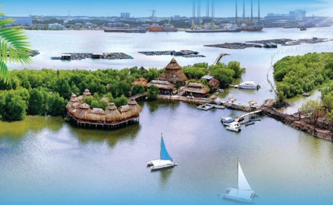
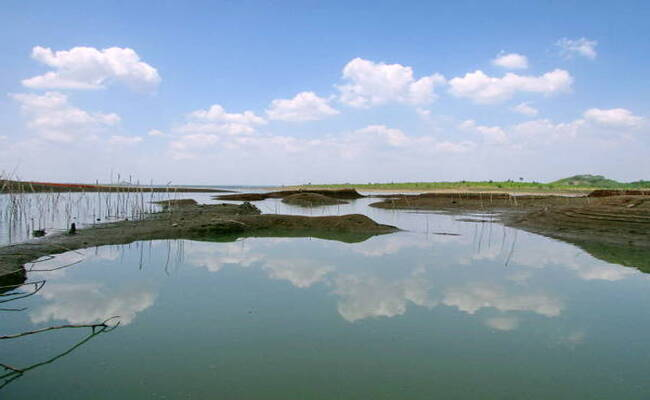
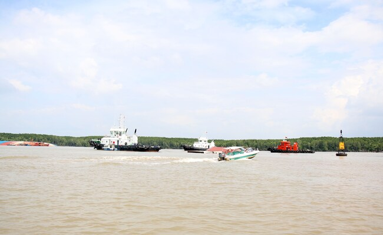
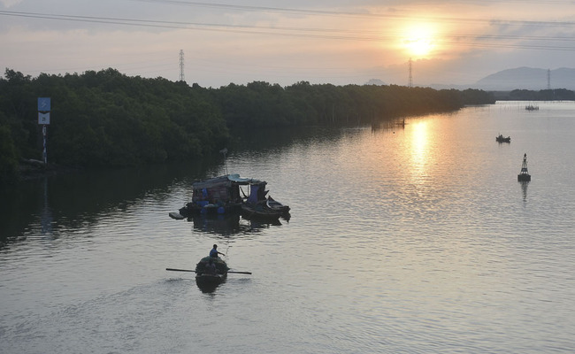

- Tỉnh Bà Rịa - Vũng Tàu có hệ thống sông ngòi khá dày đặc, với nhiều con sông lớn như sông Dinh, sông
Ray, sông Lòng Tàu, sông Cỏ May, sông Tham Quan, sông Thị Vải, sông Đồng Nai, sông Sài Gòn,... Các con
sông này có chiều dài từ vài chục km đến hơn 100 km, có lưu lượng nước lớn, tạo thành một hệ thống giao
thông thủy quan trọng của tỉnh.
• Sông Dinh:
Sông Dinh là con sông lớn nhất của tỉnh Bà Rịa - Vũng Tàu, có chiều dài 100 km, lưu lượng
nước trung bình 100 m3/s. Sông Dinh bắt nguồn từ núi Dinh, chảy qua các huyện Long Điền, Đất Đỏ, Châu
Đức và đổ ra biển Đông tại khu vực Vũng Tàu.

- Sông Dinh là một con sông đa chức năng, cung cấp nước cho sinh hoạt, sản xuất, giao thông thủy và du
lịch. Sông Dinh cũng là một nguồn cung cấp thủy sản quan trọng cho tỉnh Bà Rịa - Vũng Tàu.
• Sông Ray:
Sông Ray là con sông lớn thứ hai của tỉnh Bà Rịa - Vũng Tàu, có chiều dài 80 km, lưu lượng
nước trung bình 80 m3/s. Sông Ray bắt nguồn từ núi Dinh, chảy qua các huyện Long Điền, Đất Đỏ và đổ ra
biển Đông tại khu vực Long Hải.

- Sông Ray cũng là một con sông đa chức năng, cung cấp nước cho sinh hoạt, sản xuất, giao thông thủy và
du lịch. Sông Ray cũng là một nguồn cung cấp thủy sản quan trọng cho tỉnh Bà Rịa - Vũng Tàu.
• Sông Lòng Tàu:
Sông Lòng Tàu là con sông dài nhất của tỉnh Bà Rịa - Vũng Tàu, có chiều dài 120 km, lưu
lượng nước trung bình 120 m3/s. Sông Lòng Tàu bắt nguồn từ núi Dinh, chảy qua các huyện Châu Đức, Xuyên
Mộc và đổ ra biển Đông tại khu vực Vũng Tàu.

- Sông Lòng Tàu cũng là một con sông đa chức năng, cung cấp nước cho sinh hoạt, sản xuất, giao thông
thủy và du lịch. Sông Lòng Tàu cũng là một nguồn cung cấp thủy sản quan trọng cho tỉnh Bà Rịa - Vũng
Tàu.
• Sông Cỏ May:
Sông Cỏ May là con sông có chiều dài ngắn nhất của tỉnh Bà Rịa - Vũng Tàu, có chiều dài
60 km, lưu lượng nước trung bình 60 m3/s. Sông Cỏ May bắt nguồn từ núi Dinh, chảy qua các huyện Xuyên
Mộc và Côn Đảo và đổ ra biển Đông tại khu vực Côn Đảo.

- Sông Cỏ May cũng là một con sông đa chức năng, cung cấp nước cho sinh hoạt, sản xuất, giao thông thủy
và du lịch. Sông Cỏ May cũng là một nguồn cung cấp thủy sản quan trọng cho tỉnh Bà Rịa - Vũng Tàu.
Hệ thống kênh rạch
- Ngoài ra, tỉnh Bà Rịa - Vũng Tàu còn có nhiều kênh rạch nhỏ, nối liền các con sông với nhau, tạo thành
một mạng lưới giao thông thủy chằng chịt, thuận lợi cho việc vận chuyển hàng hóa và đi lại của người
dân.
- Các con sông ngòi và kênh rạch có tầm quan trọng to lớn đối với cuộc sống của con người. Chúng cung
cấp nước cho sinh hoạt, sản xuất, giao thông thủy và du lịch.
• Sinh hoạt:
Các con sông ngòi và kênh rạch cung cấp nước cho sinh hoạt của con người, bao gồm uống, nấu
ăn, tắm rửa và giặt giũ. Nước sông và kênh rạch là nguồn nước sạch, có thể sử dụng cho nhiều mục đích
khác nhau.
• Sản xuất:
Các con sông ngòi và kênh rạch cung cấp nước cho sản xuất nông nghiệp, công nghiệp và thủy
sản. Nước sông và kênh rạch được sử dụng để tưới tiêu cho cây trồng, sản xuất các sản phẩm công nghiệp
và nuôi trồng thủy sản.
• Giao thông thủy:
Các con sông ngòi và kênh rạch là tuyến giao thông quan trọng cho việc vận chuyển
hàng hóa và đi lại của con người. Nước sông và kênh rạch được sử dụng để vận chuyển hàng hóa và hành
khách bằng thuyền, tàu, bè.
• Du lịch:
Các con sông ngòi và kênh rạch là một địa điểm du lịch hấp dẫn, mang đến cho du khách những
trải nghiệm thú vị về thiên nhiên và văn hóa. Du khách có thể đi thuyền, tàu, bè trên sông và kênh rạch
để khám phá cảnh đẹp của thiên nhiên, tìm hiểu về văn hóa của người dân địa phương.
- Nhìn chung, các con sông ngòi và kênh rạch là một tài nguyên quý giá, có vai trò quan trọng trong việc
phát triển kinh tế, giao thông và đời sống của con người. Chúng cung cấp nước cho sinh hoạt, sản xuất,
giao thông thủy và du lịch. Chúng là một phần quan trọng của hệ sinh thái, cung cấp môi trường sống cho
nhiều loài động thực vật. Chúng cũng có ý nghĩa văn hóa và tâm linh đối với nhiều người.